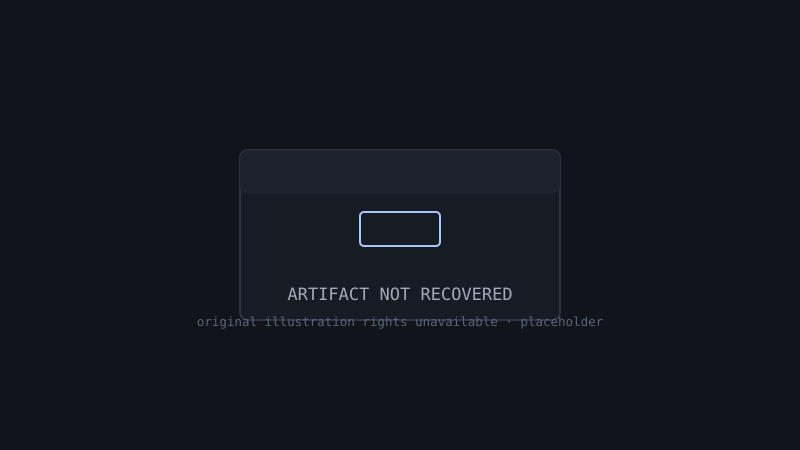

Exhibit DT-001 · Indian Internet
Before the Feed: The Internet We Remember
How India experienced the internet before it lived in our pockets.
For roughly two decades, going online in India was not something that happened in your hand, all day, without thinking. It was a place you went to, a sound you waited for, a balance you watched. This exhibit reconstructs that world in five chapters: the room, the identity, the message, the transition, and the memory. Where we describe how it felt, we say so; where we state what happened, we source it.

Interactive artifact · Try it
The Dial-Up Simulator
Before this exhibit describes the sound of going online in 1995, you can hear a reconstruction of it. The tones are synthesised live in your browser, no audio files, modelled on a period modem handshake. The number shown is a reconstruction, because nobody's real number belongs in a museum.
The line is silent. Press CONNECT when ready.
LINE IDLE
Chapter 1 · The Cybercafé
Public internet arrived in India on 15 August 1995, when the state-owned VSNL launched its Gateway Internet Access Service in the four metros. It ran at 9.6 kbit/s, and an individual account cost ₹5,200 for 250 hours. Almost nobody's home had a computer and a phone line to spare for that. So for most Indians, the internet's first address was a shop.
India's first cybercafé opened in March 1996, at the Leela Hotel in Mumbai, and the format spread everywhere: rows of partitioned desks, a printer that charged by the page, a register at the counter, and time sold in half-hour blocks. You paid for the hour whether the page loaded or not, which taught a generation its first internet skill: knowing exactly what you had come to do. Check mail. Print the admit card. Book the train ticket when IRCTC's online booking arrived in the early 2000s. Download the song before the balance ran out.
The café was social in a way home internet never was. The attendant knew everyone's email password habits better than their families did. Strangers shared machines, tips, and floppy disks. When private internet service providers arrived from late 1998 and the government's 2004 broadband policy defined broadband as an always-on connection of 256 kbit/s or more, the café began a long fade, first into a services shop for forms and printouts, then into memory.
- 1986 — ERNET connects Indian academic institutions; the internet exists in India, but not for the public.
- 15 Aug 1995 — VSNL launches public internet access (GIAS) at 9.6 kbit/s.
- Mar 1996 — India's first cybercafé opens at the Leela Hotel, Mumbai.
- 1998 — Private ISPs are licensed; Sify launches, ending the VSNL monopoly.
- 2004 — The national broadband policy defines broadband as always-on, 256 kbit/s and above.
Chapter 2 · The Online Identity
Nobody's first internet name was their own. On the early web you chose a handle, an avatar, and a version of yourself, and you maintained it like a small garden. Email addresses carried the artistry: underscores, birth years, and declarations of fandom were all pressed into service, because the good names were taken and the address was going on a résumé someday.
The defining Indian stage for this performance was Orkut, which Google launched in 2004. For a few years it was, for many young Indians, simply what "being online" meant: a profile with a scrapbook anyone could write in, testimonials that functioned as public friendship certificates, and communities for every college, crush, and grievance imaginable. The identity was public, persistent, and written by your friends as much as by you. Orkut gets its own case file in this museum as Exhibit DT-002.
What matters for this chapter is the contrast. Identity then was a place you visited and a mask you chose. Identity now is a feed you carry and a name you are expected to keep consistent everywhere. Something was gained in safety and something was lost in play, and reasonable people disagree about the exchange rate.
Chapter 3 · Messages That Travelled
Before the share button, content travelled by hand. An email forward arrived with a subject line of Fwd: Fwd: Fwd:, a chain of strangers' addresses above the text, and an instruction at the bottom: send this to ten people. Jokes, blessings, warnings, and small miracles moved through inboxes exactly the way rumours move through a town, mutating as they went.
The same culture lived on phones. SMS packs were bought in bundles, messages were composed inside a strict character economy, and the good-morning image and the festival greeting became a genre of folk art that outlived the medium that created it. When messaging apps replaced SMS, the forwards simply changed vehicles. The chain letter is arguably the oldest continuously running format on the Indian internet: older than the feed, older than the app, and still in circulation in your family group today.
This chapter is labelled honestly: the broad pattern is documented everywhere in the period's reporting, but the texture of it, which forward, whose uncle, what it felt like to receive the same joke for the fortieth time, survives as recollection. Chapter 5 collects that texture as oral history rather than fact.
Chapter 4 · The Mobile Internet Transition
The café era ended in two steps. First, the computer came home: broadband after 2004, cheaper laptops, and the slow normalisation of a connection that was simply on. Then, in the 2010s, the phone took over entirely, and the change was not gradual. When Reliance Jio launched in September 2016 with free introductory services and data priced far below the incumbents, mobile internet use expanded at a speed that turned every assumption in this exhibit into history within a few years.
The transition changed more than the device. The shared, scheduled, public internet became private, continuous, and personal. The café attendant, the printed ticket, the carefully chosen username: each lost its reason to exist. What replaced them is the internet you are using to read this, the one that lives in your pocket and forgets nothing except, as our motto insists, what matters.
Chapter 5 · What We Remember
This chapter is oral history. It collects the recollections this exhibit is built around, labelled Recollection. Details differ by city, class, and generation; no single memory below is presented as the universal Indian experience, because there wasn't one.
The sound first. The modem's handshake was the doorbell of the internet: if it connected on the first try, the day was already good. (Founder recollection, Jhansi)
You planned the hour like an exam. Two sites to check, one form to fill, one printout. If a page wasted your minutes, you remembered the site, not fondly. (Founder recollection)
The café owner kept a notebook for regulars. Your email, your usual machine, sometimes your balance. Trust was the real login system. (Founder recollection)
Your memory may correct ours. That is not a flaw in this exhibit; it is the exhibit working as intended. The submission page explains how to add your recollection to the record.
Evidence and uncertainties
Well sourced: the VSNL launch date, service name, speed, and pricing; the first cybercafé's date and location; the ERNET prehistory; private ISP entry in 1998; the 2004 broadband definition; Orkut's 2004 launch; Jio's September 2016 launch and its effect on data prices. These are documented in the sources below.
Thinner ice: exact cybercafé tariffs and rituals varied enormously by city and year; we describe the common pattern and do not claim any single price list as universal. IRCTC's online booking is dated here only to "the early 2000s"; its precise first-year of operation is told differently by different timelines, and we decline to pick one without a primary source.
Recollection: Chapter 5 is memory, labelled as such, and open to correction.
Sources
- Internet in India — Wikipedia. Launch date, GIAS pricing and speed, broadband policy. Accessed 22 October 2026.
- How the internet came to India with Archie and Veronica — The Indian Express. ERNET background, ISP licensing, IRCTC's role. Accessed 22 October 2026.
- After 25 years, India's Internet story is still playing out its infancy — Onmanorama. The 1995 launch context and early subscriber numbers. Accessed 22 October 2026.
Image credits: the cover and any gallery figures on this page are original DEAD TAB placeholder illustrations. No historical image is reproduced, because the rights status of period photographs could not be verified. If you hold rights to imagery of this era and wish to contribute it properly, see the submission page.
Related exhibits
Add to this exhibit
Were you there? A café name, a tariff you remember, a username story, a correction with a source: all of it improves the record. Submit a memory or send a correction through the founders on LinkedIn, and see the editorial policy for how contributions are reviewed and credited.